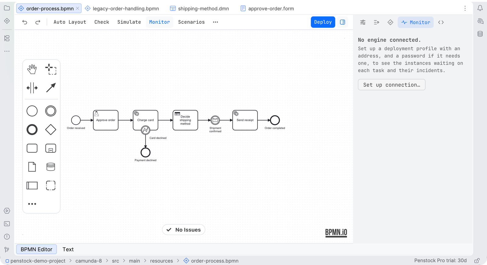

Guide / Running
Monitor
Monitor shows what the engine is doing with this diagram right now: how many instances wait at each step, where the incidents are, what an expression gives on a real instance, and which variable names the model and the engine disagree on.
Read it
- Deploy the process, so the engine has it. See Deployment.
- Press Monitor on the toolbar, or pick the Monitor tab of the sidebar.
- Penstock asks the engine of the profile in force. The tab names the engine and the version of each process it found, so you can tell whether you are looking at what you think you are.
- Look at the diagram. Badges on the shapes show how many instances wait there, and how many have an incident.
- Press Refresh to ask again.
Where Monitor is available
JetBrains
Monitor is the fourth tab of the sidebar, and the toolbar button opens it. Go to code on an incident opens the worker in the IDE.
Command line
Not available on the command line. Monitor needs a picture of the diagram. To look at an instance from a terminal, use the tools of your engine.
VS Code
Monitor is a tab of the sidebar, and the toolbar button, or Penstock: Monitor, opens it. It asks the engine of the profile in force. Go to code on an incident goes through the code links, so with Pro a job type opens its worker. See Code links in VS Code.

What you see
| Incidents | Each incident with the step and the message the engine gave. Click one to select the step. Go to code opens the worker that runs the task, when Pro links code to the diagram. |
| Waiting | Each step with instances waiting on it, and how many. |
| Badges | On the canvas: how many wait at each step, and how many have an incident, so a busy step is visible without opening the tab. |
| Hover | The hover card of an element says what waits on it. |
Other messages: No instance is running on prod. and order-process is not deployed on prod. The tab says which address was asked and when.
Try an expression on a real instance
- Pick an instance in the Monitor tab, and select an element in the diagram.
- Every condition, input and output mapping and script on it can be run against that instance's variables. The result, or the engine's own complaint, appears next to the expression.
- The same action is on the expression field in the properties panel, where the result lands under the field.
Nothing is written on the engine. On Camunda 8.9 and later the engine evaluates the expression. Camunda 7, Operaton and CIB seven cannot evaluate an expression on request, so the tab shows the instance's variables and says what evaluation needs. Penstock does not evaluate an expression locally: a local answer would not be the engine's answer. A camunda.secrets reference shows the placeholder the engine returns, and Penstock does not resolve the secret.
Variable names the model and the engine disagree on
On Camunda 8.10 and later the engine can list the variable names it has seen for the deployed definition. Compared with what the diagram reads and writes, that gives two short lists.
- Unused in the model. The engine has seen the name and nothing in the diagram names it.
- Never set in production. The diagram reads the name and the engine has never seen it. The elements that read it are listed, and a click selects one.
The comparison is with the diagram, not with the code. A variable that only the code reads is still unused in the model. The Code tab is where the two are compared.
| Camunda 8.10+ | Camunda 8.9 | Camunda 8 before 8.9 | Camunda 7, Operaton, CIB seven | |
|---|---|---|---|---|
| Instances and their variables | yes | yes | yes | yes |
| Evaluate an expression | yes | yes | needs 8.9 | needs 8.9 |
| Variable names the engine has seen | yes | needs 8.10 | needs 8.10 | not offered |
The version is never guessed. Penstock asks, and when the engine has no such endpoint the tab says which version it needs.
When the engine is asked
Only when you open Monitor, press Refresh or ask for a result. Never in the background. Every question is a read. It works on Camunda 7, Operaton and CIB seven, and on Camunda 8.8 and later. The request is made with the profile's credentials. See Security and privacy.
Common problems
- The tab says no engine is connected.
- The profile in force has no address. Press the arrow next to Deploy and choose Edit connection…. Or set
deployment.url. See Deployment. - "The engine refused the question (403)".
- The profile's user may not read process instances. Use a user that may.
- "is not deployed on …".
- Deploy the process to that profile first.
- The numbers look old.
- Press Refresh. Monitor does not update by itself.